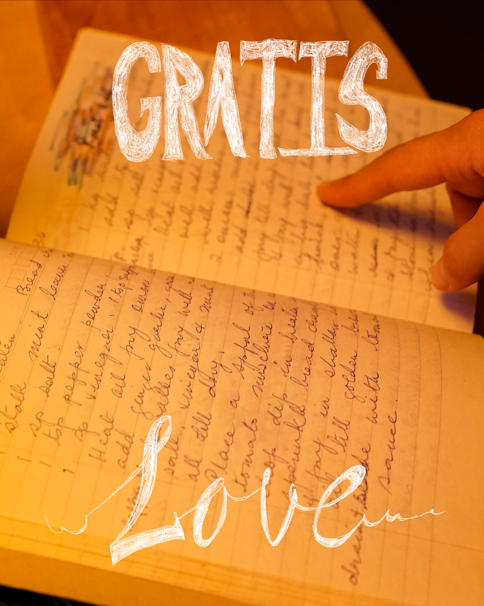
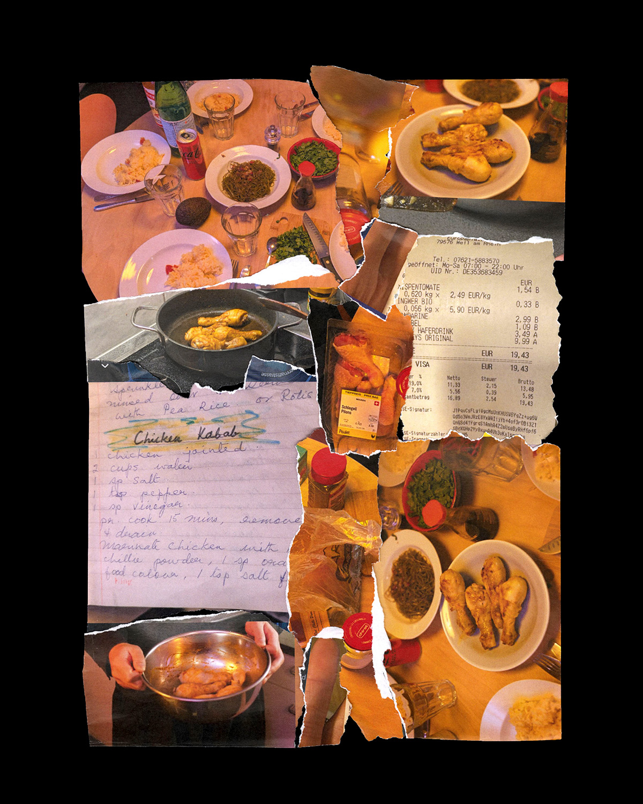
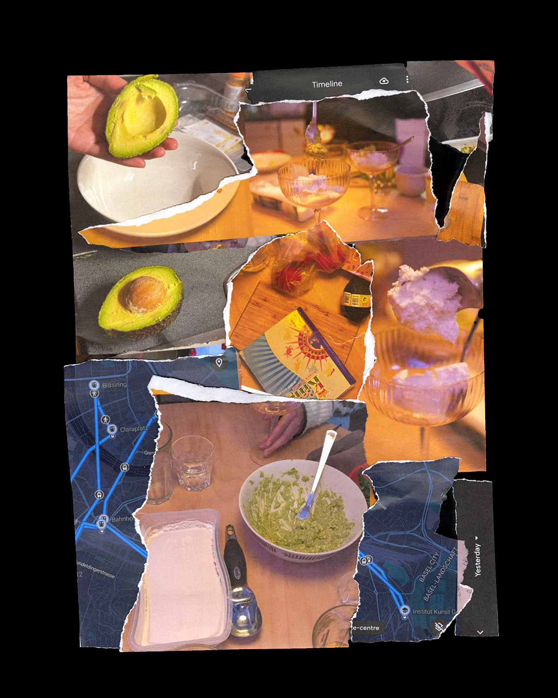
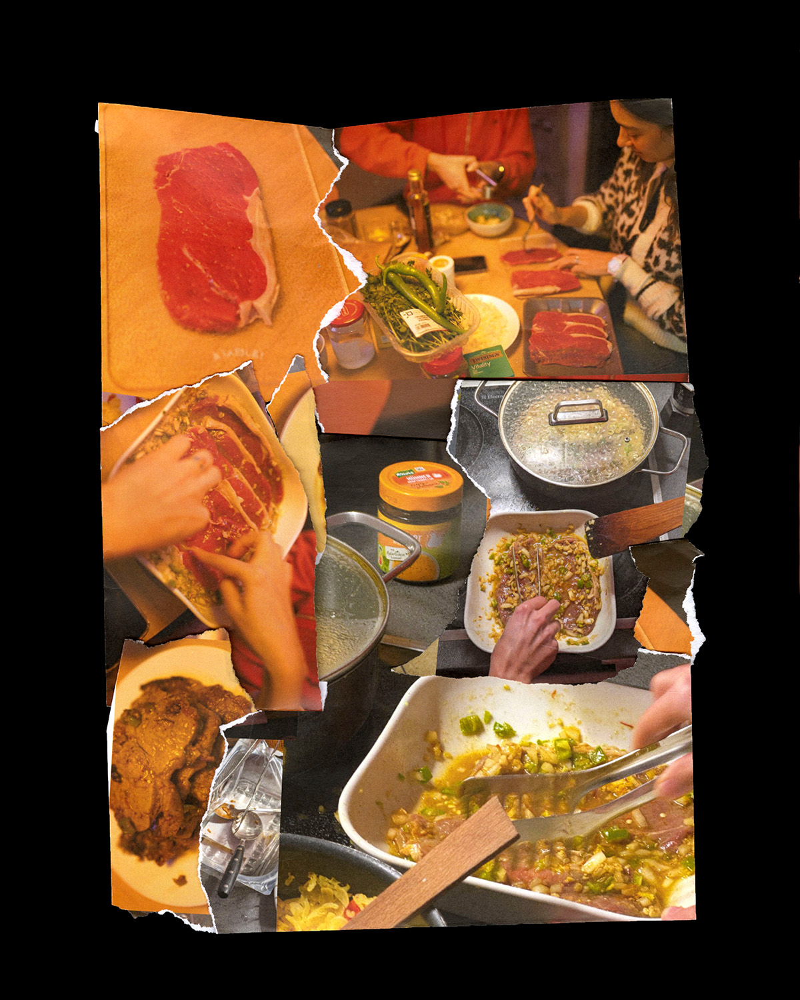

WORKSHOP DOCUMENTATION
Fragmented schedules, relationships, experiences, memories, information…… This is one way to look at the Collage, yes. But if you think outside of an individual scenario? Each one of us, separate backgrounds, chopped schedules, butchered passions, cut up…… meeting on the same plate, glued into the same sheet of paper.
PARTICIPANTS
Deniz çalışkan, Hsiao-Yen Yao, Lucie Lin, Nana Ehrsam, Yuh-Chyi Liou
RECIPES
Chicken Kabab / Rice or Rasam / Roast Beef / Avocado Ice cream



